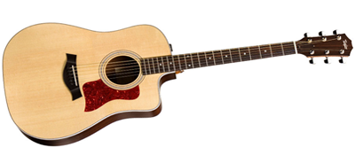

Hobbies and Interests
East Lansing and Richland
Here are some activities that I enjoy participating in on campus as well as at home.
Sports

Sports and outdoor activities have always been a large part of my life. I enjoy playing soccer, frisby, and various water sports. The past 3 years here at MSU, I've participated in the IM Sports, playing outdoor and indoor soccer. It's a lot of fun and it's great excercise, as well as an opportunity to build friendships with people I otherwise would not have met.
I also enjoy playing frisby casually when it's warmer and not so windy outside. It's definitely more of a relaxing sport and something to enjoy without the competition that comes with playing soccer.
When I'm not at school, I live at home in Richland Michigan, near Gull Lake, between Kalamazoo and Battle Creek. I enjoy sailing on the lake in a Laser Sailboat, as well as wakeboarding.
Music

My parents got me into music at a young age and I've been with it ever since. My mom got me and my sisters into violin lessons at the age of 6, and I played for a long time. Since I started college, I haven't had as much time to play, but when I get the chance, it's always fun to practice. I also, more recently have started to play the guitar. It's been easy to transfer what I've learned from the violin into guitar, so the learning curve has been more gradual.